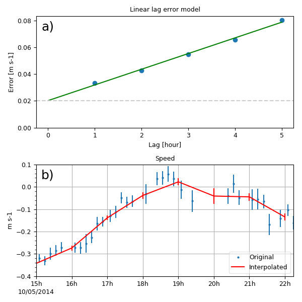

1.3.3.6.3.1.5. Weigthed interpolation 1D based on errors¶
Voir : regrid1d() cellerr1d().

Interpolation of radial speed to an hourly time axis using weights that are based on measurement error and lag errors: a) lag error model, b) result of interpolation with a time zoom.
from vcmq import (cdms2, data_sample, N, cdtime, curve2,round_date, create_time,
lindates, regrid1d, add_key, P)
from vacumm.misc.grid._interp_ import cellerr1d
from scipy.stats import linregress
# %% Read data
f = cdms2.open(data_sample('radial_speed.nc'))
sp = f('speed')
spe = f('speed_error')
f.close()
# %% Create hourly time axis
taxi = sp.getTime()
taxi.toRelativeTime('hours since 2000')
ctimesi = taxi.asComponentTime()
ct0 = round_date(ctimesi[0], 'hour')
ct1 = round_date(ctimesi[-1], 'hour')
taxo = create_time(lindates(ct0, ct1, 1, 'hour'), taxi.units)
# %% Lag error
# - estimation
els = []
lags = N.arange(1, 6)
for lag in lags:
els.append(N.sqrt(((sp[lag:]-sp[:-lag])**2).mean()))
els = N.array(els)
a, b, _, _, _ = linregress(lags, els)
# - plot
P.figure(figsize=(6, 6))
P.subplot(211)
P.plot(lags, els, 'o')
P.plot([0, lags[-1]], [b, a*lags[-1]+b], 'g')
P.axhline(b, color='0.8', ls='--')
P.ylim(ymin=0)
P.xlabel('Lag [hour]')
P.ylabel('Error [m s-1]')
add_key(1)
P.title('Linear lag error model')
# %% Interpolation
sph, speh = regrid1d(sp, taxo, method='cellerr', erri=spe, errl=-a, geterr=True)
# %% Time zoom for plot clarity
tzoom = (ct1.sub(7, cdtime.Hour), ctimesi[-1])
sp = sp(tzoom)
spe = spe(tzoom)
sph = sph(tzoom)
speh = speh(tzoom)
# %% Main plot
curve2(sp, 'o', err=spe.asma()/2., markersize=2, ymin=-.4, ymax=.1,
show=False, subplot=212, label='Original')
curve2(sph, '-r', err=speh.asma()/2., linewidth=1.5, show=False, key=2,
savefigs=__file__, label='Interpolated', legend=True, tight_layout=True,
legend_loc='lower right', close=True)